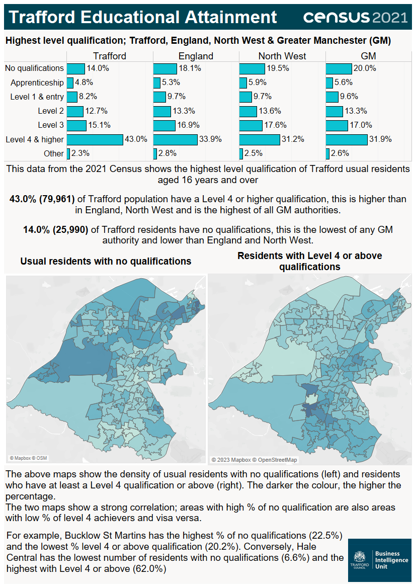

Source: Office for National Statistics.

Infographic containing statistics relating to educational attainment released on from the census taken on Sunday 21 March 2021. This data shows the highest level of qualification of usual residents aged 16 years and over. No qualifications: Trafford (14.0%), England (18.1%), North West (19.5%), Greater Manchester (20.0%); Apprenticeship: Trafford (4.8%), England (5.3%), North West (5.9%), Greater Manchester (5.6%); Level 1 & entry: Trafford (8.2%), England (9.7%), North West (9.7%), Greater Manchester (9.6%); Level 2: Trafford (12.7%), England (13.3%), North West (13.6%), Greater Manchester (13.3%); Level 3: Trafford (15.1%), England (16.9%), North West (17.6%), Greater Manchester (17.0%); Level 4 & above: Trafford (43.0%), England (33.9%), North West (31.2%), Greater Manchester (31.9%); Other: Trafford (2.3%), England (2.8%), North West (2.5%), Greater Manchester (2.6%). 43.0% (79,961) of Trafford's population have a Level 4 or higher qualification, this is higher than in England, North West and is the highest of all Greater Manchester authorities. 14.0% (25,990) of Trafford residents have no qualifications, this is the lowest of any Greater Manchester authority and lower than in England and North West. When comparing areas within Trafford, areas with high percentages of residents with no qualifications are also areas with low percentages of level 4 achievers and visa versa. For example, the ward of Bucklow-St Martins has the highest percentage of residents with no qualifications (22.5%) and the lowest percentage of residents with a level 4 or above qualification (20.2%). Conversely, Hale Central ward has the lowest percentage of residents with no qualifications (6.6%) and the highest percentage of residents with a level 4 or above qualification (62.0%).